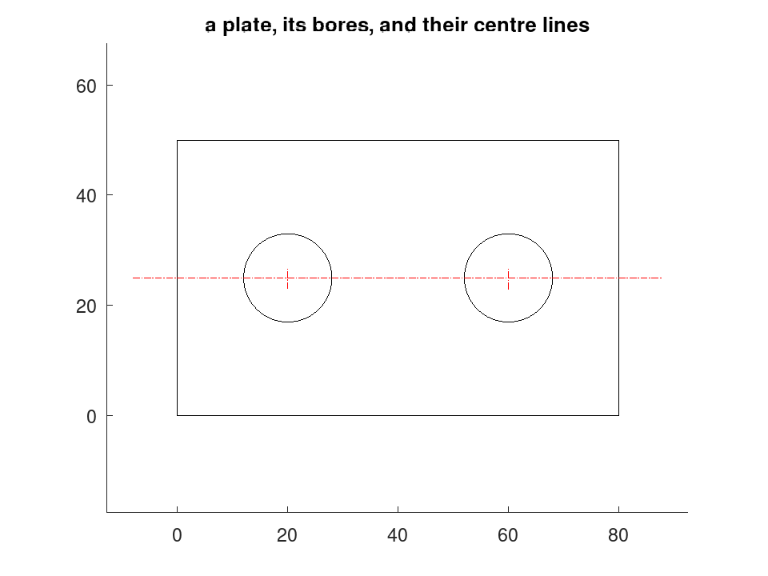
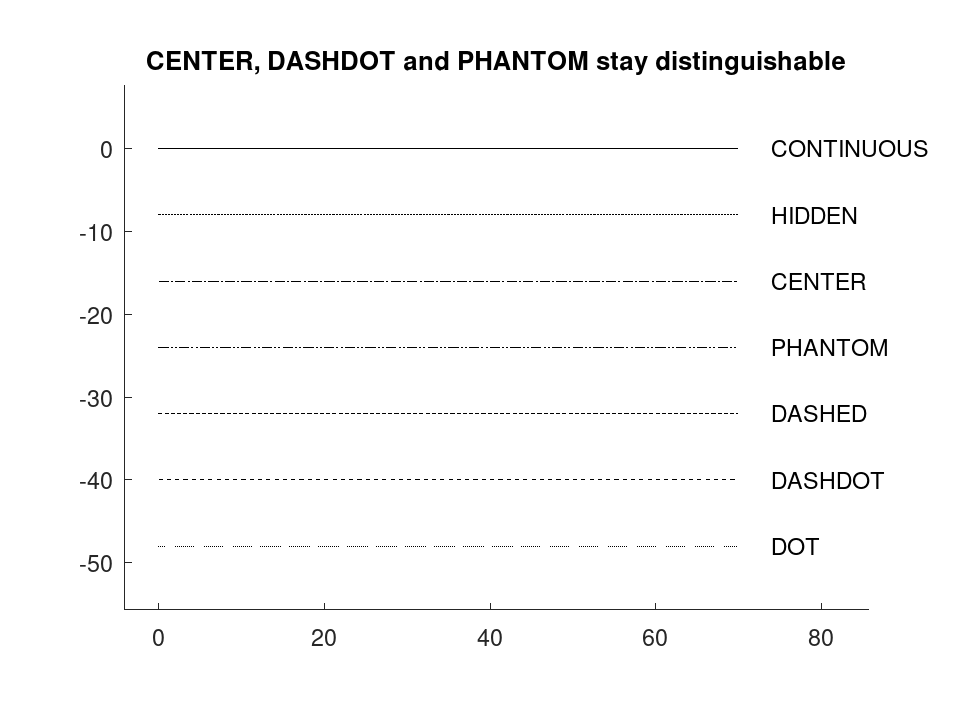
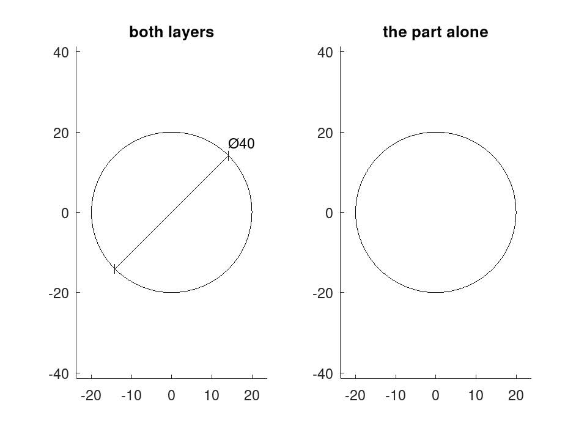

draw.Drawing.plot
draw.Drawing: plot (D)
draw.Drawing: plot (HAX, D)
draw.Drawing: plot (…, Name, Value)
draw.Drawing: H = plot (…)
Draw a draw.Drawing into a figure, to look at it.
draw.Drawing.plot (D) renders the drawing into the current
axes at
equal aspect ratio, honouring each entity’s layer, line type and colour.
draw.Drawing.plot (HAX, D) draws into the axes
HAX instead
of the current ones, as every plotting function in Octave accepts an axes
handle ahead of its data. The 'Axes' pair below does the same
thing
and is equivalent.
H = draw.Drawing.plot (…) returns a column of graphics
handles,
one per object created, so that a caller can restyle or delete them.
| Name | Default | Meaning |
|---|---|---|
'Axes' | gca | axes to draw into |
'LineWidth' | 0.5 | width of every line, in points |
'FontSize' | 8 | size of text, in points |
'Layers' | all | cell array of layer names to draw |
'Arc' | 64 | segments per full turn when sampling curves |
'Hatch' | 'lines' | 'lines' to fill a
hatch, 'boundary' for its outline alone |
'Linetypes' | 'true' | 'true' to draw
the
real dash patterns, 'approximate' for the figure’s own four
styles |
'LTScale' | 1 | multiplies the dash lengths |
'Margin' | 0.05 | blank space kept between the geometry and the axes, as a fraction of the drawing’s larger side; 0 fits the axes tight to the geometry |
'FontScale' | [] | points per model unit; when
given, each string is sized from its own entity height instead of from
'FontSize' |
'DimScale' | 1 | multiplies the dimension ornament,
which is a model dimension: a drawing meant for wants 50
here, as it does in entities |
Source Code: draw.Drawing
Auto-scaled limits stop exactly at the extreme coordinate, so an outline
lying on it is drawn along the frame and reads as part of the axes rather
than as geometry — which is the common case, not a corner one: a plate
is
usually dimensioned from its own edges. Both axes are therefore padded by
the same absolute amount, which keeps the equal aspect ratio the drawing
depends on, and that amount is 'Margin' times the larger of the
two
spans.
The drawing is lowered through draw.Drawing.entities — the same
conversion
the DXF backend uses — and the result of that is what is plotted. A
figure
therefore shows the entities the file will contain, not a more flattering
rendering of them. In particular a hatch appears as its boundary alone,
because that is what the file will carry; the second output of
draw.Drawing.entities says so explicitly.
The alternative, rendering from the drawing model directly, would let the screen show something the recipient never receives. For a package whose output is meant to be manufactured, that is the wrong way round.
A figure offers four line styles and this package defines seven line
types,
so setting linestyle would collapse three of them onto their
neighbours — CENTER, DASHDOT and PHANTOM would all come out dash-dot,
and a
phantom line would be indistinguishable from a centre line.
Instead each run of geometry is cut into its dashes and the pieces are
drawn,
so all seven patterns render as themselves. Dash lengths are in the units
of
the drawing, multiplied by 'LTScale', which is the model-space
convention CAD uses. A drawing spanning tens of millimetres therefore
needs
no adjustment; one spanning metres wants an 'LTScale' to match.
The cost is one graphics object per dash. Set 'Linetypes' to
'approximate' on a large drawing to fall back on the figure’s
four
styles and one object per entity.
Text is not to scale by default. A figure sets font size in points, which does not track the data units the drawing is in, so text cannot both sit at the right size and stay there when the axes are zoomed. It is drawn at a fixed point size, positioned correctly.
That is right for a screen and wrong for a sheet, where a string must
come
out at the height the model gives it. Pass 'FontScale', in points
per model unit, and each string is sized from its own entity height
instead:
at a plot scale of that factor is 72 / (25.4 *
S),
which is what draw.Drawing.print supplies. For a rendering where
text is to
scale by construction, use draw.Drawing.tikz.
See also: draw.Drawing, draw.Drawing.entities, draw.Drawing.tikz, dxf.write
Source Code: draw.Drawing
plot renders a drawing at equal aspect, honouring layer, line type and colour. It plots what entities produces, which is what the file backends write, so a figure shows what the recipient will get.
D = draw.Drawing ('plate');
D.Layer = 'OUTLINE';
D = D.polyline ([0, 0; 80, 0; 80, 50; 0, 50], true);
D = D.circle ([20, 25], 8).circle ([60, 25], 8);
D.Layer = 'AXES';
D.Linetype = 'CENTER';
D.Colour = 'red';
D = D.centremark ();
D = D.line ([-8, 25], [88, 25]);
plot (D);
title ('a plate, its bores, and their centre lines');

All seven line types render as themselves, because each run is cut into its dashes rather than handed to one of the four styles a figure offers.
D = draw.Drawing ();
y = 0;
for lt = draw.linetype ()
D.Linetype = lt{1};
D = D.line ([0, y], [70, y]);
D.Linetype = 'CONTINUOUS';
D = D.text ([74, y - 1], lt{1}, 2.5);
y -= 8;
endfor
plot (D);
title ('CENTER, DASHDOT and PHANTOM stay distinguishable');

An axes handle may lead, as for any plotting function, and Layers draws only what was asked for --- useful for checking one layer at a time.
D = draw.Drawing ();
D.Layer = 'PART'; D = D.circle ([0, 0], 20);
D.Layer = 'DIMS'; D = D.diam ([0, 0], 20);
figure ();
subplot (1, 2, 1);
plot (gca (), D);
title ('both layers');
subplot (1, 2, 2);
plot (gca (), D, 'Layers', {'PART'});
title ('the part alone');
